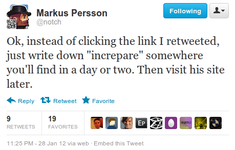

Your browser doesn't support the features required by impress.js, so you are presented with a simplified version of this presentation.
For the best experience please use the latest Chrome, Safari or Firefox browser.
Damien Alexandre
Benjamin Clay
Damien Alexandre
@damienalexandre
Consultant Web - PHP/Symfony/Js/Pony
Clever Age
Benjamin Clay
@ternel
Consultant Web - PHP/Symfony
Clever Age
Coup de pied dans la
LAMP
Cette conférence n'est pas une conférence sur le cyclimse...
Performances
Un site excellent qui met trop de temps à s'afficher, c'est un site pénalisé.
Attention, il n'existe pas *UNE* configuration de la stack LAMP parfaite

La stack LAMP
LAMP dans le monde
- Linux : 85% des serveurs web
- Apache : 65% des serveurs web
- MySQL : 45% des serveurs web
- PHP : 77% des serveurs web
Serveur de test
Serveur basique (kimsufi OVH), 50€ / mois
- Intel i5 CPU 760 @ 4 x 2.80GHz
- 16 Go de mémoire DDR3
- Disque 1To
- Connexion 100 Mbps

Procédure de test
- Debian Squeeze frais
- Drupal - 10 000 contenus générés, sans cache, ni cron
- Surf sur le site
- Extraction d'urls depuis les logs apaches
- Siege depuis un autre serveur
- Stress test de 50 à 350 concurrents
Installation basique
apt-get install apache2 mysql-server php5 php-pear php5-mysql php5-gda2enmod rewrite
Versions
- PHP : 5.3.3-7+squeeze9
- MySQL : 5.1.61-0+squeeze1 sans mysqlnd
- Apache : 2.2.16-6+squeeze7
Bench de référence
- Maximum = 45 req/s
- Temps de réponse = jusqu'à 7 secondes

htop
- Doit être inférieur à votre nombre de CPU
- Avec 4 cores, un load au dessus de 3.5 est une "anomalie"
- ou pas.
1.03 0.22 0.11
1min 5min 15min
Monitorer ses serveurs !
Comment monitorer ?
- Monitoring applicatif : Pourquoi et comment ?
- Salon Honorat à midi
- Présenté par Kenny DITS
APC : Cache d'OpCode
apt-get install php5-apc
On obtient 70 req/s et temps de réponse largement diminués
FREE WIN

If you care about performance and don’t use a bytecode cache then you don’t really care about performance. Please get one and start using it.
Stas Malyshev, PHP Core Contributor, Zend employee
Dotdeb, maintenu par Guillaume Plessis
- PHP 5.4 et 5.3 + extensions
- MySQL 5.5 and 5.1
- Percona toolkit
- Nginx…
Sur Debian 6.0 pour amd64 et i386.
Protip® : Laissez la compilations à ceux dont c'est le métier.
/etc/apt/sources.list
/etc/apt/sources.list :
deb http://packages.dotdeb.org squeeze all
deb-src http://packages.dotdeb.org squeeze all
wget http://www.dotdeb.org/dotdeb.gpg
cat dotdeb.gpg | sudo apt-key add -
apt-get update
apt-get install apache2 mysql-server php5 php-pear php5-mysql php5-gd php5-apc
a2enmod rewrite
Versions
- PHP : 5.3.13-1+dotdeb.0
- MySQL : 5.5.24 avec mysqlnd
- Apache : 2.2.16 (identique)
"fonctions avancés du driver MySQL natif pour PHP" à 16:30, Espace Adenauer par Serge Frezefond
5 secondes de temps de réponse, et presque 100 req/s

MySQLTuner.pl

MySQL Tuning Primer

Configuration de MySQL
- innodb_thread_concurrency = 0
- innodb_buffer_pool_size = 1024M
- innodb_flush_method = O_DIRECT
- max_connections = 300
- query_cache_limit = 1M
- query_cache_size = 200M
Apache2 : mod_status
- Le nombre de worker en cours / en attente
- Le status complet de chaque worker
- Le uptime du serveur
- Les moyennes de poids, req / secondes...
- L'utilisation du CPU
- Les requêtes et leurs hosts
Apache2 : installation de mod_status
a2enmod mod_status
ExtendedStatus On (pour avoir plus d'infos)
SetHandler server-status
Order Deny,Allow
Deny from all
Allow from .pony.com
Apache2 / PHP / APC
Désactiver les modules inutiles :
authn_file, authz_default, authz_groupfile, authz_user, autoindex, deflate, negotiation, reqtimeout, setenvif, env, cgi
MaxClient de 150 à 250
apc.stat = 0
~95req/s - < 5 secondes

Apache => Ngnix
MySQL => MariaDB
Linux => Windows
PHP => PERL
Modifier notre stack logiciel sans peine et sans avoir à toucher à notre code PHP.
Nous ne sommes pas des sysadmins. C'est un métier.
MariaDB is the new MySQL
- 2008 : Sun achète MySQL (et ça devient bof)
- avril 2009 : Oracle achète Sun
- mai 2009 : Monty Widenius, créateur de MySQL, démissionne et crée The Monty Program. Sa nouvelle société crée un fork nommé MariaDB
- Vraiment opensource (MySQL contient des features réservés aux entreprises)
- Est et restera sous licence GPL (v2)
- 100% compatible avec MySQL
- Créé par les créateurs de MySQL
- Haut lieu de l'innovation technologique du SGBD :)
- Déjà utilisé chez PAP, Paybox, OLX, Jelastic...
- Support disponible
- SkySQL
- Percona Inc
- Monty Program
- FromDual
MariaDB 5.5
- Threadpool
- Group commit dans le log binaire
- Lib client non bloquante
- SphinxSE pour le full-text
- GIS
Facile à installer
Drop-in replacement pour le binaire MySQL.
# MariaDB repository list - created 2012-05-13 14:29 UTC
# http://downloads.mariadb.org/mariadb/repositories/
deb http://mirror.switch.ch/mirror/mariadb/repo/5.5/debian squeeze main
deb-src http://mirror.switch.ch/mirror/mariadb/repo/5.5/debian squeeze main
apt-get update
apt-get install mariadb-server-5.5
Ne pas oublier d'exclure dotdeb du sources.list
Le Threadpool
Oracle le propose sous forme de plugin dans la version commerciale de MySQL.
thread_handling=pool-of-threads
La licence de MySQL Entreprise n'autorise pas la diffusion de benchmark comparatif sans l'accord écrit d'Oracle.
Le Threadpool
Utilisation de sysbench :
sysbench --test=oltp --oltp-table-size=1G --db-driver=mysql --mysql-host=localhost --mysql-user=root --mysql-password=poney --init-rng=1 --num-threads=256 --max-requests=0 --oltp-read-only --oltp-dist-type=uniform --max-time=180 run
Le Threadpool

Nginx
- Igor Sysoev en 2002
- Documentation en anglais en 2006
- Explosion en 2008
- Levée de fond de 3M$ en 2011
- Nginx HQ @ SF en 2011

Nginx
- Développé pour le fort trafic
- C10K Problem
- Noyau minimal, beaucoup de modules
- Traitements asynchrones
- Peu de ressources utilisées !
PHP-FPM
- FastCGI Process Manager
- Implémentation du FastCGI pour PHP
- Plusieurs pools de PHP avec configuration
- SlowLog
Nginx et PHP-FPM
apt-get install nginx php5-fpm
Copier/Coller de la conf Drupal sur wiki nginx

Nginx et PHP-FPM
Nginx et PHP-FPM

Cherokee
- FastCGI / SSL / VirtualHost / ...
- Configuration simple
Symfony, RoR, Django, Liferay, Glassfish, SugarCRM, phpBB, ...
Percona Server with XtraDB
- Fondé par Peter Zaitsev (expert badass)
- Build de MySQL patché
- XtraDB = InnoDb en mieux (utilisé dans MariaDB)
Drizzle

- Fondé par Brian Aker
- Forké de MySQL 6, allégé, passé en C++
- Se concentre sur la scalabilité
Et PHP 5.4 ?
Suivre les mises à jours de PHP c'est aussi bénéficier d'améliorations de performance.
Et au fait, PHP 5.3 a trois ans.
Installer PHP5.4
Merci Dotdeb !
deb http://packages.dotdeb.org squeeze-php54 all
deb-src http://packages.dotdeb.org squeeze-php54 all
Très peu d'incompatibilités mais APC en beta.
PHP 5.4 == FREE WIN
Apache 2.4
- Consommation mémoire réduite
- Une amélioration générale des performances
- Le "MPM Event" supporté
- Lectures/écritures asynchrones des MPM
- NameVirtualHost est maintenant obsolète
Pas d'installation simple, on compile !
Pinaaaaageeeeeeeee
Pinaaaaageeeeeeeee
Pinaaaaageeeeeeeee
Pinaaaaageeeeeeeee
Pinaaaaageeeeeeeee
by positioning, rotating and scaling them on an infinite canvas
have you noticed it's in 3D*?